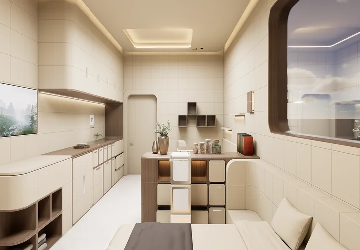
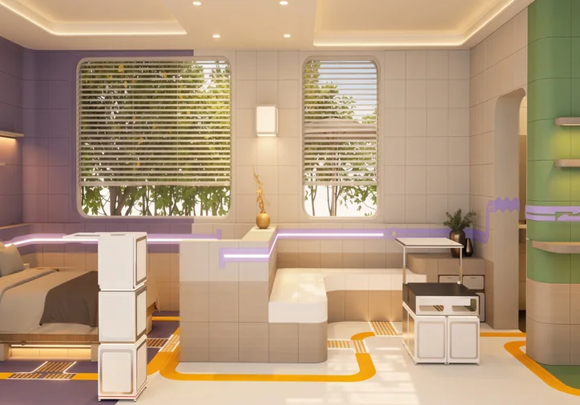
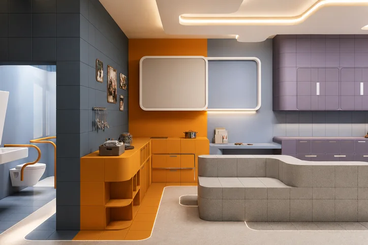

01 — MOBILITY DECLINE
MRS. YING
Knee arthritis and balance loss.
A cane indoors, fear of falling,
furniture that gets in the way.
WORKS
The three aging types from our research, given faces. Each card opens the full story
of one home: what made it hard to live in, and how the cube system rebuilt it.

01 — MOBILITY DECLINE
Knee arthritis and balance loss.
A cane indoors, fear of falling,
furniture that gets in the way.

02 — VISION DECLINE
Low contrast and poor night vision.
Boundaries blur, night trips to the
bathroom become risky.

03 — MEMORY DECLINE
Short-term memory loss.
Rooms stop making sense,
routes and routines slip away.